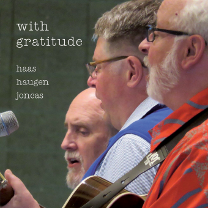

¡@I will come to you in the silence
I will lift you from all your fear
You will hear My voice
I claim you as My choice
Be still, and know I am near
I am hope for all who are hopeless
I am eyes for all who long to see
In the shadows of the night,
I will be your light
Come and rest in Me
Do not be afraid, I am with you
I have called you each by name
Come and follow Me
I will bring you home
I love you and you are mine
I am strength for all the despairing
Healing for the ones who dwell in shame
All the blind will see, the lame will all run free
And all will know My name
Do not be afraid, I am with you
I have called you each by name
Come and follow Me
I will bring you home
I love you and you are mine
I am the Word that leads all to freedom
I am the peace the world cannot give
I will call your name, embracing all your pain
Stand up, now, walk, and live
Do not be afraid, I am with you
I have called you each by name
Come and follow Me
I will bring you home
I love you and you are mine
Do not be afraid, I am with you
I have called you each by name
Come and follow Me
I will bring you home
I love you and you are mine
David Haas (b. Bridgeport, Michigan, 1957) resides in Eagan,
Minnesota, where he is director of The Emmaus Center for
Music, Prayer and Ministry and serves as campus minister at
Cretin-Derham Hall in St. Paul, Minnesota where he also
directs the CDH Liturgical Choir.
Highly regarded as one of the preeminent liturgical music
composers in the English-speaking world, he has produced
more than 45 collections of original music. His liturgical
works are sung and prayed throughout the world and appear in
hymnals of many Christian denominations and in many
languages.
David¡¦s newest projects with GIA includeA
Changed Heart,Your Call Is Constant(a
book of prayers and reflections), andMass
for A New World. Other recent projects with GIA includeLiving
Spirit, Holy Fire;God Is Here,
andReach Toward Heaven. His live
recording and video Glory Day continues to receive
international acclaim, and he has served as a consultant for
the various editions of the popular GIA hymnalsGatherandGather
Comprehensive.
¡X GIA Publications, Inc. (http://www.giamusic.com)
Further Reflections on Confessions and Statements of Faith References
Difficult times occur in
the lives and communities of God¡¦s people because this is a fallen world.
The confessions demonstrate this perspective:
Belgic Confession, Article 15 teaches that ¡§¡Kby the disobedience of Adam
original sin has been spread through the whole human race¡Ka corruption
of the whole human nature...¡¨ As a result, God¡¦s people are ¡§guilty and
subject to physical and spiritual death, having become wicked, perverse,
and corrupt in all [our] ways¡¨ (Article 14). In addition, ¡§The devils
and evil spirits are so corrupt that they are enemies of God and of
everything good. They lie in wait for the church and every member of it
like thieves, with all their power, to destroy and spoil everything by
their deceptions¡¨ (Article 12).
Our World Belongs to God continues to affirm that ¡§God has not abandoned
the work of his hands,¡¨ nevertheless ¡§our world, fallen into sin, has
lost its first goodness...¡¨ (paragraph 4). And now ¡§all spheres of
life¡Xfamily and friendship, work and worship school and state, play and
art¡Xbear the wounds of our rebellion¡¨ (paragraph 16).
Yet, in a fallen world,
God¡¦s providential care is the source of great assurance, comfort and
strength. Through these thoughts, our trust in God is inspired.
Belgic Confession, Article 13 is a reminder that God¡¦s providence
reassures us that God leads and governs all in this world ¡§according to
his holy will¡Knothing happens in this world without his orderly
arrangement.¡¨ Further, this Confession identifies that this ¡§gives us
unspeakable comfort since it teaches us that nothing can happen to us by
chance but only by the arrangement of our gracious heavenly Father, who
watches over us with fatherly care...in this thought we rest.¡¨
Belgic Confession, Article 13, is a reminder that much is beyond human
understanding and so ¡§we do not wish to inquire with undue curiosity
into what God does that surpasses human understanding and is beyond our
ability to comprehend.¡¨
In Heidelberg Catechism, Lord¡¦s Day 9, Question and Answer 26 we testify
that we ¡§trust God so much that [we] do not doubt that he will provide
whatever [we] need for body and soul and will turn to [our] good
whatever adversity he sends upon [us] in this sad world.¡¨
In Heidelberg Catechism, Lord¡¦s Day 10, Question and Answer 28, we are
assured that through our trust in the providence of God we can have
¡§good confidence in our faithful God and Father that nothing in creation
will separate us from his love.¡¨
When we pray the Lord¡¦s Prayer we ask not to be brought into the time of
trial but rescued from evil. In doing so we ask that the Lord will
¡§uphold us and make us strong with the strength of your Holy Spirit so
that we may not go down to defeat in this spiritual struggle...¡¨
(Heidelberg Catechism, Lord¡¦s Day 52, Question and Answer 127)
Belgic Confession, Article
26 speaks about the intercession of Christ as the ascended Lord. ¡§We have no
access to God except through the one and only Mediator and Intercessor,
Jesus Christ the Righteous.¡¨ We, therefore, do not offer our prayers as
though saints could be our intercessor, nor do we offer them on the ¡§basis
of our own dignity but only on the basis of the excellence and dignity of
Jesus Christ, whose righteousness is ours by faith.¡¨ Because Jesus Christ is
our sympathetic High Priest, we approach the throne ¡§in full assurance of
faith.¡¨
No greater assurance can
be found than that expressed in Heidelberg Catechism, Lord¡¦s Day 1, Question
and Answer 1: ¡§I am not my own by I belong¡Xbody and soul, in life and in
death¡Xto my faithful Savior, Jesus Christ.¡¨
In all difficult times, we eagerly await the final day when God ¡§will set
all things right, judge evil, and condemn the wicked¡¨ (Our World Belongs to
God, paragraph 57).
David Robert Haas (b. 1957, Saginaw, Michigan) is a well-known author and
composer of music for choirs and congregations. He studied vocal music
performance and conducting at Central Michigan University and theology and
music at the University of St. Thomas in St. Paul, Minnesota. He has served
congregations in Michigan, Iowa, and Minnesota as parish musician and
currently serves as a cantor at St. Cecilia¡¦s Parish in St. Paul, Minnesota,
and is director of the Emmaus Center for Music, Prayer, and Ministry in
Eagan, Minnesota, where he resides. Haas is committed to encouraging young
liturgical musicians, so he directs a summer program for high school and
college-age students.
Following Vatican II (1962¡X1965), many writers of Roman Catholic liturgical
music avoided classical hymn structures, but Haas, and others in the
generation that followed, rebirthed hymnody with theologically-sound texts
based on scripture in well-developed arrangements with instrumental parts
and choral parts in four-part harmony in many instances (Silhavy, n.p.).
David Haas is one of three liturgical composers who formed what was
informally called the ¡§Minnesota School¡¨ of liturgical composition, all
graduating from the University of St. Thomas. According to the website for
GIA Publications, David Haas, Michael Joncas (b. 1951), and Marty Haugen (b.
1950) produced ¡§some of the most popular and effective music for the
Church¡¦s worship that has appeared in the days following the Second Vatican
Council¡¨ (Haas, www.giamusic.com). Recently, the three friends combined to
produce a reunion compilation titledWith
Gratitude ¡V Music Collection(Chicago: GIA, 2017) that
includes their most widely published songs, including ¡§You Are Mine¡¨ (CD,
MP3, and print music,https://www.giamusic.com/store/resource/with-gratitude-music-collection-print-g9397).
The songs on this album have played a large role in reshaping congregational
song since the Second Vatican Council, both within Catholic parishes and
Protestant congregations.
Though Haas is prominent as an author and composer of modern Roman Catholic
liturgical music, his many popular songs have found their way into a wide
variety of hymnals and songbooks. In addition to ¡§You Are Mine,¡¨ three
additional hymns that are widely sung in the ecumenical community are ¡§Blest
Are They¡¨ (The
Faith We Sing,2155), ¡§We Are Called¡¨ (The
Faith We Sing,2172), and ¡§Without Seeing You¡¨ (The
Faith We Sing,2206).
In 2017, The National Association of Pastoral Musicians (NPM) conducted a
hymn survey in which 3,000 participants ranked hymns. Haas¡¦s ¡§You Are Mine¡¨
was number four on the list. Written in the early 1990s, this hymn,
according to Hymnary.org, is now included in fourteen current hymnals across
numerous denominations. The words are based on texts from Psalm 46:10, ¡§Be
still and know¡K¡¨; Isaiah 43:1b, ¡§Do not fear¡Kyou are mine¡¨; and John 14:27,
¡§Peace I leave with you; my peace I give to you. I do not give to you as the
world gives. Do not let your hearts be troubled and do not be afraid¡¨
(NIV*). The hymn¡¦s text is written in God¡¦s voice, assuring, comforting, and
encouraging ¡V ¡§I am with you,¡¨ ¡§Come and rest in me,¡¨ and ¡§I love you and
you are mine.¡¨ The themes of this hymn are God¡¦s care, strength in troubling
times, baptism, and confirmation. ¡§¡¦You Are Mine¡¦ is a reminder that no
matter where we are and how low we may feel, God is always there, calling to
us, and inviting us to follow¡¨ (The
Faith We Sing: Worship Planner, 55).
The hymn first appeared in the composer¡¦s collection (also on CD),Who
Calls You by Name: Music for Christian Initiation(Chicago:
1988-1991). This gives some clues as to the liturgical intent of the song.
Though hymnologist and hymnwriter Carl P. Daw, Jr. finds the scriptural
allusions to be ambiguous, he adds a helpful note in understanding the
song¡¦s meaning:
As it seems initially to have been conceived, the present song was a
corporate affirmation for newly baptized persons that they now belonged to
the body of Christ, which could be construed as a reasonable extension of
the verse in Isaiah [43:1b]. But because of the ambiguity of the word ¡§you¡¨
in modern English, this song can also be understood in an individualistic
rather than a corporate way. In John 14:18b, for example, Jesus does say
something very close to the opening line, ¡§I will come to you¡¨ (translations
vary), but the context makes clear that he is speaking to all the disciples,
not to an individual. In modern English, the singular is taken as the
default intention if the plural is not specified, allowing this song to be
appropriated as a personal assurance rather than one shared with a community
(Daw, 181-182).

David Haas, Michael Joncas, and Marty Haugen produced the reunion
compilation called "With Gratitude - Music Collection."
Original intent and context notwithstanding, Haas indicated in an email to
Lutheran hymnologist Paul Westermeyer that ¡§this song has been very popular
for celebrations of reconciliation and forgiveness, especially at healing
services and funerals¡¨ (Westermeyer, 419). Indeed, once a hymn is released
to the community, singers find meanings and uses beyond the composer¡¦s
original purpose. Hymns of quality often invite a wider range of meaning
because of the richness of their texts.
Haas has composed a memorable and easily learned refrain that may be
extracted for use as a response in worship, which is a great way to
introduce this hymn. The original choral octavo published by GIA
Publications, Inc. in 1991 (G-3656) is written for two-part choir,
congregation, guitar, treble C instrument, cello or bassoon, and keyboard.
InThe
Faith We Sing(2218), the melody appears in unison in the
congregation edition; but in the singer¡¦s edition, Haas¡¦s harmony for the
refrain appears. The key of the hymnal edition matches the octavo, so that
Haas¡¦s harmony at the end of the fourth stanza and the instrumental parts
could easily be added by combining both sources.
This hymn will continue to be a source of hope in an unpredictable world ¡V
¡§I am the peace the world cannot give¡¨ (stanza 4) and a source of strength
for those in turmoil ¡V ¡§I am the strength for all the despairing¡¨ (stanza
3).
Among the awards received by David Haas is the Outstanding Professional Book
Award from the Catholic Press Association (2003) for his book,The
Ministry and Mission of Sung Prayer(St. Anthony Messenger
Press). He, Michael Joncas, and Marty Haugen were honored with the
Distinguished Alumni Award (1995) from their alma mater, the University of
St. Thomas. The National Association of Pastoral Musicians (NPM) named him
Pastoral Musician of the Year (2004), and he received the Emmaus Award for
Excellence in Catechesis from the National Catholic Education Association
(2014). The University of Portland (Oregon) awarded him the Honorary
Doctorate in Humane Letters (2015). In 2019, he founded and maintains a
Facebook website, ¡§Order of Baptized Franciscans¡¨ in which he shares
insights from the life and ministry of St. Francis of Assisi.
SOURCES AND FURTHER READING:
Carl P. Daw, Jr.,Glory
to God: A Companion(Louisville: Westminster John Knox,
2013).
Shawn Gingrichis director of music ministries, First
United Methodist Church, Hershey, Pennsylvania. His undergraduate degrees
are from Lebanon Valley College; he received a Master of Music degree from
Westminster Choir College, and the Doctor of Worship Studies from the Robert
E. Webber Institute for Worship Studies. He is also an adjunct instructor at
Messiah College, artistic director of Hershey Handbell Ensemble, and
president of the Fellowship of United Methodists in Music and Worship Arts
(2017-2019).